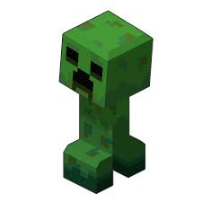
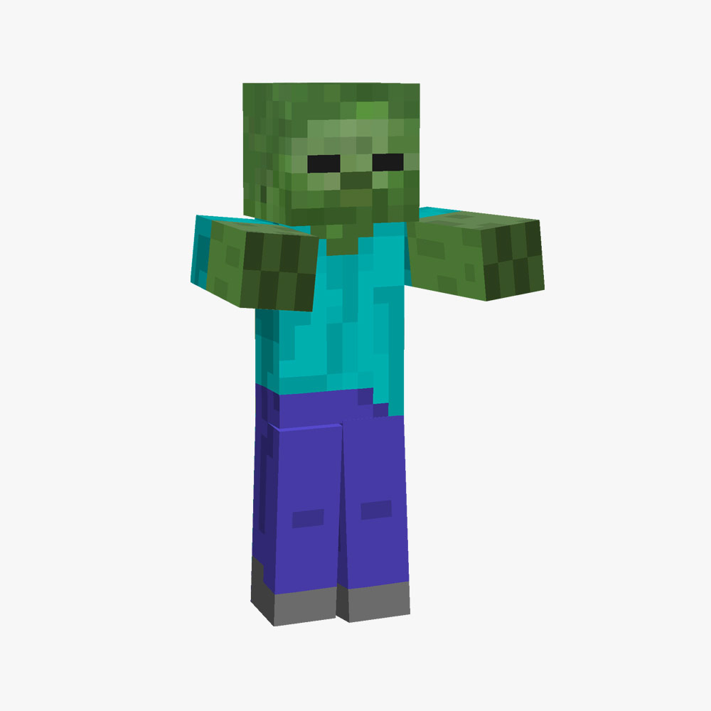
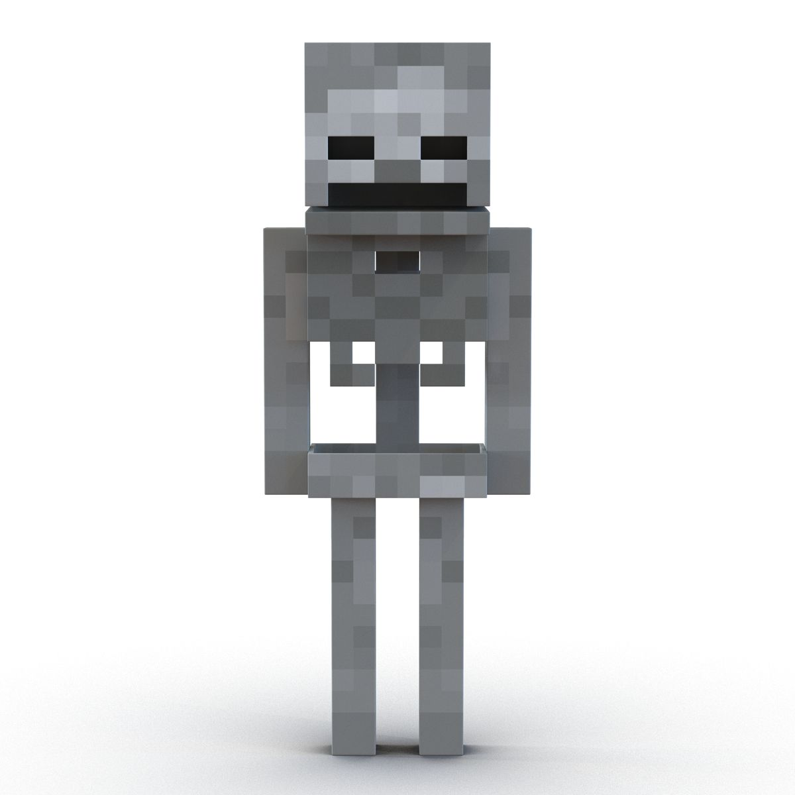

Про гру
Minecraft - це пісочниця, де можна будувати та виживати.
Minecraft - це пісочниця, де можна будувати та виживати.
Усі живі істоти в грі називаються мобами. Вони поділяються на три типу: Ворожі, Дружні та Нейтральні.
| Ворожі | Дружні | Нейтральні |
|---|---|---|
| Кріпер | Корова | Залізний голем |
| Зомбі | Курка | Зомбіфікований піглін |
| Скелет | Свиня | Ендермен |


